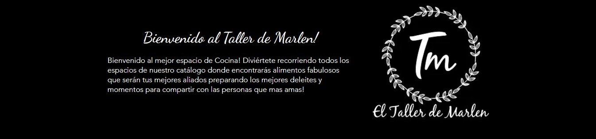
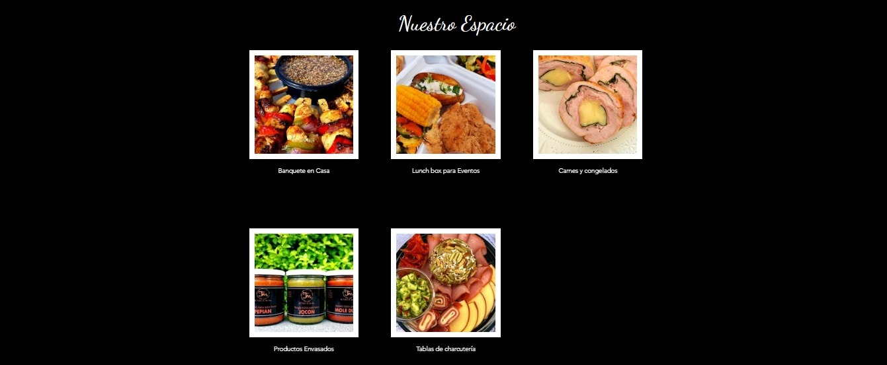

REFACCIONES
| BANQUETE EN CASA |
LUNC BOX PARA EVENTOS |
CARNES Y CONGELADOS |
PRODUCTOS ENVASADOS |


Necesitas una refacción rápida y lista para entregar? un desayuno o un almuerzo?
Te ofrecemos nuestras LUNCH BOX - QUICK LUNCH
listas para entregar en tu domicilio, en la oficina, en algún salón.
No ofrecemos servicio de catering, solamente entrega, empacados
higiénicamente con todos los lineamientos de seguridad alimentaria,
para garantizar que los alimentos llegarán completamente frescos
y en perfectas condiciones para disfrutar.